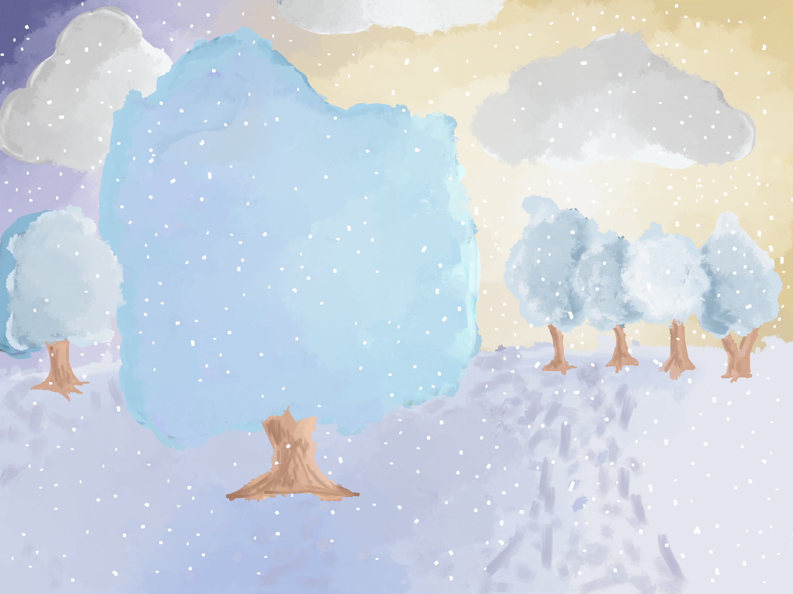

Using Adobe Photoshop I made these projects. I used the lasso tool on both projects to make clean lines separating the layers.

"Skyline Magazine"

"Framed"
This project was our final for Digital Media Semester 1. It took in total 10 hours and 10 minutes. It was made during winter. I wanted to create a piece inspired by the beauty of winter. I used the wet media brushes on Photoshop to create a painted look.
"Winter Wonderland"

1/9/2020